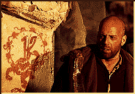

Contents | Features | Reviews | News | Archives | Store |
 |
|
| Movie Credits | Buy It! |
Twelve Monkeys
Review by Carrie Gorringe
 |
Directed by Terry Gilliam. Starring Bruce Willis, Brad Pitt, Screenplay by David and Janet Peoples. |
In 1962, French filmmaker Chris Marker made La Jetee, a short film of only twenty-nine minutes in length, but one with the impact of the grandest epic imaginable. La Jetee deals with the aftereffects of nuclear war, with survivors living underground in Paris. These survivors look to the past and future for consolation, there being none in the present. As a form of reconnaissance into desired memory states, the scientists who run the underground tap into the mental resources of those survivors who have strong memories. The unnamed protagonist of the film is one of them. During his forays into his memories, he falls in love with a woman from his past and yearns to escape with her. Throughout the film, he is haunted by a childhood image consisting of the face of a beautiful woman (as seen on an observation deck at Orly Airport), a seemingly faceless man and then falling to the ground, with crowds everywhere. At the end of the film, this image gains relevance when he is shot by the man at the airport just as the escape is about to occur (the underground had no intention of allowing him to go free). At the end of the film, the narrator calmly intones that escaping time is impossible; indeed, the images that had haunted him all of his life were those of his own death. With that, the screen goes abruptly dark. The brilliant succinctness of the narrative structure and the underlying, unrelenting sense of creepiness alone make this film a classic, but more important and seldom mentioned is the fact that La Jetee is composed almost entirely of still photographs. The film then becomes a testament to what, in this era of flashy editing, is still the most important visual aspect of film: the single image, beautifully composed and resonant with meaning.
From the opening credits of Twelve Monkeys, the audience learns that it was "inspired" by La Jetee and there are enough elements from the original to make this claim reasonably credible. Sent from a nightmarish future, James Cole (Willis) soon finds himself drugged and incoherently babbling in an asylum in Baltimore (not a dramatic change from his previous existence) in the year 1990. No one is willing to believe the fantastic story that he has to tell, namely, that he has been sent to the wrong year by mistake. He was supposed to have appeared in the year 1996, where he was supposed to halt the spread of a plague that destroyed much of the Earth's population, and left the survivors and their descendants (including himself) in a subterranean hell of an existence. While in the asylum, Cole meets two people who are to have a significant impact on his life: Dr. Kathryn Railly (Stowe) and a rather long-winded paranoiac named Jeffrey Goines (Pitt). Dr. Railly slowly comes around to believing in James' story. While Goines rambles on and on about his latest conspiracy theories, he inadvertently informs Cole that his father, Leland Goines (Plummer) is a famous virologist. Cole escapes from the asylum, returns back to his world to report on his findings and eventually gets to 1996 where he again encounters Railly and Goines. Cole kidnaps Railly, and forces her to drive him to Pennsylvania, the location from which history tells him the plague began. He learns that Goines is living a double life after his release, both as an assistant to his father, and as the leader of a radical animal-rights liberation organization (whose logo consists of the phrase Twelve Monkeys and an illustration of twelve monkeys in a spiral pattern). It is Goines who will be responsible for releasing the plague into society through a terrorist action that he will commit in his father's laboratory. In the process of trying to foil Goines' plot, Cole and Railly fall in love and Cole decides not to return to the future after Goines has been safely put out of commission. But would this decision go unnoticed by others?
Unfortunately, it is apparent that the filmmakers hoped that it might be. The problem with Twelve Monkeys stems from the disparate nature of its two cinematic sources. It is almost impossible to reconcile the artsy, quasi-metaphysical aspects of La Jetee with a generic suspense narrative. An attempt can be made at success in this venue by overloading the visuals with portentous, pre- and post-apocalyptic grunginess and using many tight camera angles to create an atmosphere of paranoia; until the narrative structure of Twelve Monkeys catches up with the narrative of La Jetee, Gilliam nearly succeeds in making the unwieldy mess work. But then Twelve Monkeys finds itself buried right back in the problem which it had tried to avoid from the beginning: how to gather up the untidy bits that conclude La Jetee (and which compliment the eerie, unsettled feeling they leave) and to then smooth them over into a neat conclusion. The filmmakers settle for the narrative equivalent of sweeping everything under the rug, but the lump left behind from their efforts is obvious, not least of all because the film keeps tripping over it at the most inconvenient moments.
Nevertheless, as with too many films this year, the high point of Twelve Monkeys comes in the form of the performances. They are extremely effective, especially that of Bruce Willis. Willis' performance, although glum in tone (not one trademark smirk appears within the entire two hours of Twelve Monkeys) contains all the necessary resonances. He brings the right sense of conviction and urgency to Cole's quest to reverse the tattered shreds of history without becoming irrelevant in the process. Stowe makes Dr. Railly into a woman who exudes considerable grace under considerable and varied pressures, then converts her into a gutsy woman who loses none of that grace as she and Cole fall in love. Pitt's performance as Goines starts out with a surprising amount of depth, but very quickly becomes more unconvincing as it becomes more outrageous. Plummer's own trademark sardonic suaveness is all too briefly employed. But the real surprise is how solidly convincing Frank Gorshin is in his limited appearance as Dr. Fletcher, one of the asylum doctors who is not convinced by Cole's story. It has often been said that "dying is easy, but comedy is hard", thereby suggesting that comedians have a tacit advantage in playing dramatic roles, because it's a step downward in employing their skill sets. Certainly Robin Williams' track record is a testimonial to the truthfulness of that aphorism; perhaps Gorshin, who did Jim Carrey-like imitations long before there was a Jim Carrey, can use this role to forge a new career path.
The real clue to understanding how Twelve Monkeys plays the role of epigone to the original lies in a confession of sorts made by director Gilliam during a preview screening in Washington, D.C. At that screening, Gilliam stated that he had never seen La Jetee before remaking it. When your idea of adapting a work is to borrow its structure while ripping out its heart with an unknowing hand, the result, one might say, is nothing more than cinematic monkey business.
Contents | Features | Reviews | News | Archives | Store
Copyright © 1999 by Nitrate Productions, Inc. All Rights Reserved.